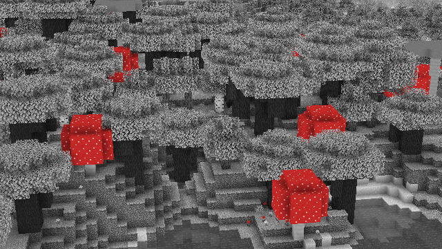

Pack & White - Crimson Chrome
The Black & White pack where only the colour red remains!
Download [Java]
This resource pack makes all the in game textures black and white, except for the red block
Here are some screenshots:
